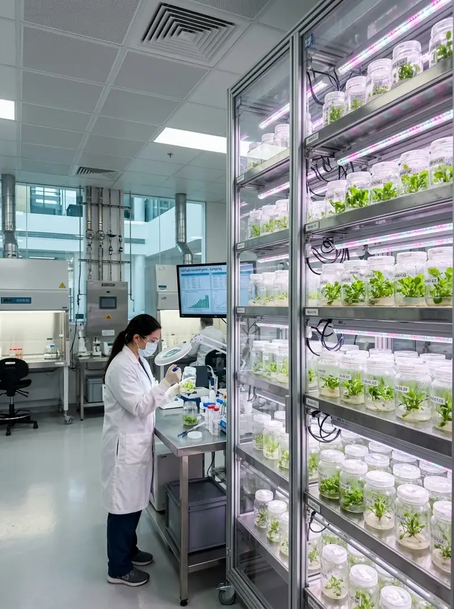
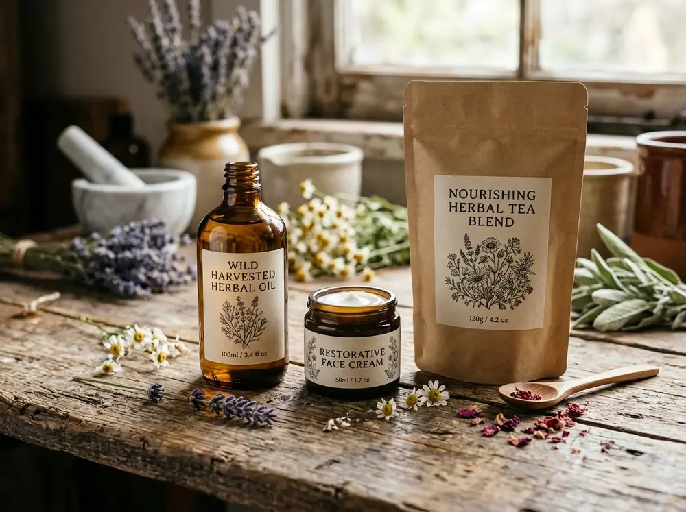

HOLISTIC WELLNESS SANCTUARY
Stackly Apothecary
Synthesizing Bio-Active Formulations...
Licensed Clinical Dispensary
0%
Synthesizing Bio-Active Formulations...
Bridging ancient botanical wisdom with modern pharmaceutical precision to deliver trusted, personalized healthcare.
Aura Apothecary started with a simple belief: nature holds the ultimate pharmacopeia. Founded in 2018, we set out to bridge the gap between ancient botanical medicine and modern clinical rigor.
Our journey began deep in the Western Ghats and tropical rainforests, documenting indigenous healing plants and sustainable wildcrafting practices. We partnered with generational herbalists who understand the subtle rhythms of botanical harvesting.
Today, our state-of-the-art compounding laboratories in Chennai translate these time-tested traditions into standardized, pharmaceutical-grade formulations certified for purity and potency.

Full transparency in sourcing and compounding. We never compromise on clean ingredients or ethical protocols.
Rigorous multi-stage purity testing adhering to international pharmacopoeia standards and certifications.
Patient-first healthcare tailored to individual biologies, respecting nature's biochemical intelligence.
Advanced ultrasonic extraction and bio-identical formulation maximizing active phytochemical yield.
Every tincture, capsule, and bespoke compound follows a closed-loop clinical protocol ensuring molecular integrity from sustainable harvest to personal dispensation.
Medicinal plants are gathered during precise metabolic hours when volatile terpenes and secondary phytochemicals reach their highest biological concentration.
Low-temperature subcritical extraction isolates therapeutic molecules without heat degradation, toxic petroleum solvents, or chemical residuals.
Every batch is profiled via High-Performance Liquid Chromatography against international pharmacopoeial standards to guarantee active potency.
Custom-compounded in positive-pressure ISO Class 5 laminar air cleanrooms into UV-filtering amber glass with IoT-monitored cold-chain dispatch.
A multidisciplinary collective of clinicians, botanists, and compounding pharmacists.
PharmD with 15+ years pioneering botanical-drug interactions and clean clinical compounding.
PhD in Ethnobotany, leading wildcraft biodiversity studies and sustainable harvesting programs.
Specialist in customized bio-identical tinctures, sterile cleanroom compounding, and purity assurance.
Every botanical extract is assayed via High-Performance Liquid Chromatography for active phytochemical marker concentrations.
Third-party accredited testing guaranteeing zero heavy metals, pesticide residues, microbial pathogens, or synthetic fillers.
Compounded in positive-pressure, HEPA-filtered cleanrooms exceeding international pharmaceutical safety standards.
Independent regulatory accreditations and laboratory certifications ensuring our apothecary meets the highest medical, ethical, and dispensing benchmarks.
Our cleanroom facilities and compounding methods strictly adhere to World Health Organization Good Manufacturing Practices for pharmaceutical safety.
Third-party accredited laboratory verification confirming analytical calibration accuracy, microbial safety, and zero heavy metal adulteration.
Medical-grade UV-filtering amber glass containers protecting delicate phytochemical structures while eliminating microplastic exposure.
Supervised by licensed doctoral clinical pharmacists authorized for personalized compounding, prescription reviews, and clinical pharmacotherapy.

Our commitment extends beyond personal health. We believe regenerative medicine starts with a regenerative planet.